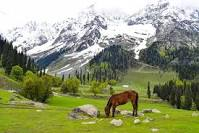
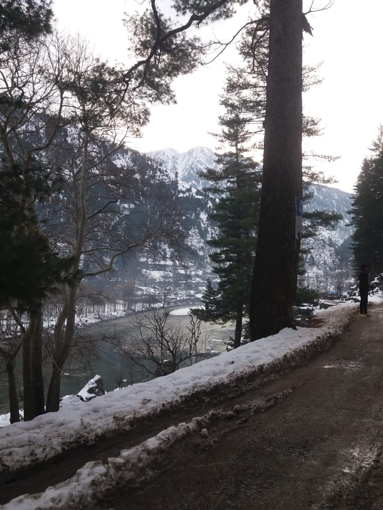
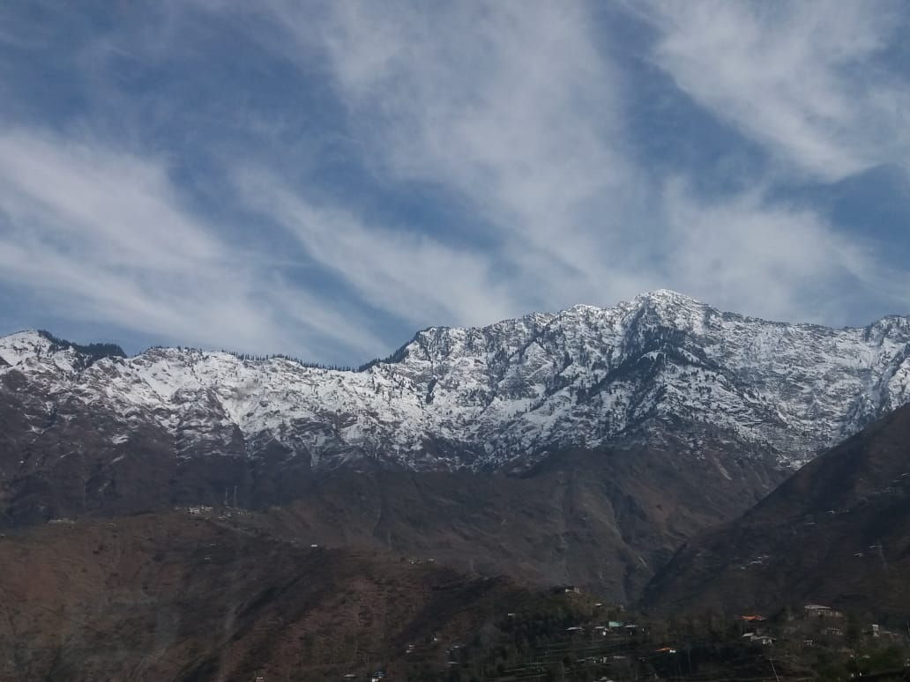
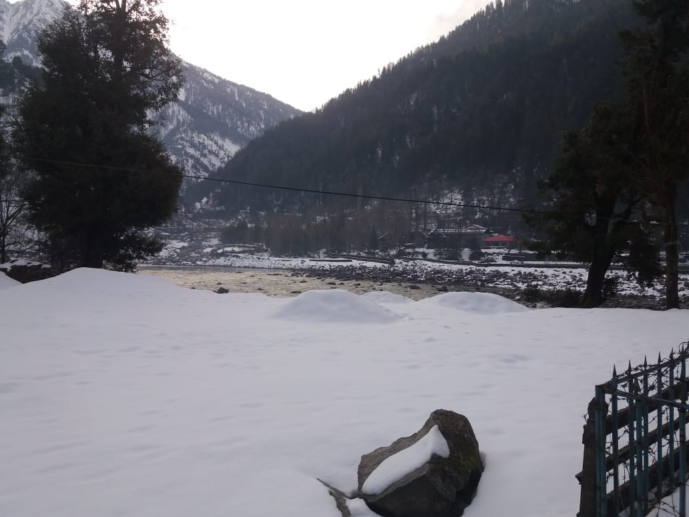

Kashmir Travel Story






Discover the beautiful vales, snowy mountains and fascinating waterfalls of Kashmir in our latest travel adventure.
Join me on an incredible journey to Kashmir. My trip there was life-changing, and I discovered the most beautiful scenery, often called the 'Paradise on Earth.' Imagine serene Dal Lake with its floating gardens and the snow-covered mountains of Kashmir; every moment in Kashmir felt like a storybook. I'll guide you through the winding streets of Srinagar, share heartwarming tales of the locals, and tell you about my adventures in the Neelum Vales. Come along as we explore the breathtaking landscapes, experience the rich culture, and meet the friendly people that make Kashmir a must-visit destination for those who seek both peace and excitement.